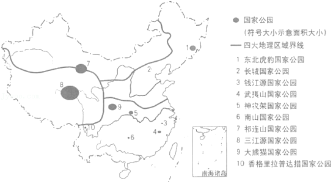
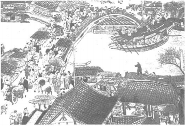

2019年北京市中考地理真题 · 选择题 第11、12、13、14、15题
如图是反映新中国成立以来不同时期的人口问题或人口政策的一组漫画。读图，完成第10﹣12题。
11．能正确反映我国人口问题及对应政策发展变化过程的排序是（ ）
A．a﹣c﹣d﹣bB．b﹣c﹣a﹣dC．c﹣a﹣b﹣dD．d﹣b﹣a﹣c
12．一个国家人口政策的制定与调整说明（ ）
①人口政策只能解决人口增长问题 ②人口政策要适应社会发展需求
③人口发展应与资源、环境相协调 ④人口增长应与经济发展相适应
A．①②③B．①②④C．①③④D．②③④
我国国家公园的设立旨在保护自然生态系统的完整性，推进自然资源的科学保护和合理利用，其代表国家形象，展现中华文明，还可以开展环境教育。如图为日前我国启动的10个国家公园体制试点分布图。读图，完成第13﹣14题。

13．图中（ ）
A．北方地区四季分明，最适宜建立国家公园
B．南方地区的国家公园数量最多，面积最大
C．三江源国家公园位于地势最高的青藏地区
D．大熊猫国家公园位于气候干旱的西北地区
14．国家公园的设立（ ）
①是为了保护自然生态系统的完整性
②可以推进自然资源的合理利用
③是为了发展旅游业以增加经济收入
④可以作为开展环境教育的基地
A．①②③B．①②④C．①③④D．②③④
如图为《清明上河图》的苏绣作品（局部），反映了北宋都城汴梁（今河南开封）的繁华风貌。读图，完成第15﹣17题。

15．图中景观反映的是（ ）
A．城市聚落B．工业生产C．乡村聚落D．农业生产